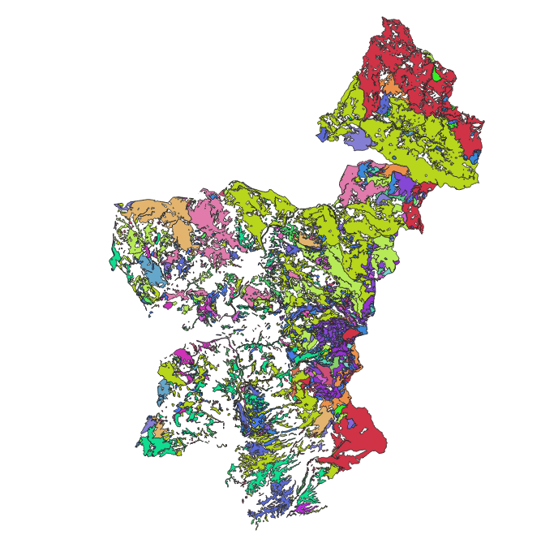

DESCRIPTION
r.forcircular analyzes and measures the level of sustainability of the
forest-wood supply chain in a circular bioeconomy approach.
NOTES
This module permits to identify potentially usable forest areas both from a
technical and economic point of view. The required data input is a vector file
with a series of mandatory fields described below:
- incr_ha: [float] value of the forest increase [mc * ha * year-1]
- management: [integer] forest management system (form of government), can
take on two values, namely (1) for forest management and (2) for coppice
management
- treatment: [integer] treatment adopted, it can take on two values,
namely (1) for the final use cut and (2) for the thinning. Thinning is
not foreseen for coppice woods.
- roughness: [integer] level of terrain accidentality - (0): no
accidentality; (1): locally bumpy; (2): partially bumpy; (3): mostly
bumpy
- tree_diam: [integer] average diameter of the stems [cm]. If the data is
not available, indicate the generic value 99999
- tree_vol: [decimal] average volume per plant [m3]. If the data is not
available, indicate the generic value 9.999
- rotation: [integer] cutting cycle (or forest shift) [years]
- soil_prod: [integer] degree of soil productivity (fertility): (1): very
low; (2): low; (3): medium; (4); tall; (5): very high
- PCI: [float] Average lower calorific value of the wood species present
in the polygon [MWh / t]
- cut: [float]: cut percentage (range from 0 (0%) to 1 (100%)). It
represents the percentage of wood mass on the total stock that falls
during the cutting operation.
- perc_round: [float] (from 0 to 1) corresponding to the percentage of the
wood mass for round wood
- perc_timb: [float] (from 0 to 1) corresponding to the percentage of the
wood mass for poles
- perc_fire: [float] (from 0 to 1) corresponding to the percentage of the
wood mass for firewood
- perc_res: [float] (from 0 to 1) corresponding to the percentage of wood
residues to be used for energy (wood chips)
- perc_roun9: [float] (from 0 to 1) corresponding to the percentage of the
wood mass for roundwood in the assortment optimization scenario
- perc_timb9: [float] (from 0 to 1) corresponding to the percentage of the
wood mass for poles in the assortment optimization scenario
- perc_fire9: [float] (from 0 to 1) corresponding to the percentage of the
wood mass for firewood in the assortment optimization scenario
- perc_res9: [float] (from 0 to 1) corresponding to the percentage of wood
residues to be used for energy use (wood chips) in the assortment
optimization scenario
- pric_roun: [float] corresponding to the average price for the roundwood
assortment [€ / m3]
- pric_timb: [float] corresponding to the average price for the poles
assortment [€ / m3]
- pric_fire: [float] corresponding to the average price for the firewood
assortment [€ / m3]
- pric_bioe: [float] corresponding to the average price for biomass energy
for energy use [€ / MWh]
Other mandatory data:
- vector tracks file
- vector boundaries file
- raster digital elevetion model file
Optional data:
- vector rivers file
- vector lakes file
- vector protected areas file
r.forcircular identifies forest areas potentially exploitable from both
technical (according to geomorphological, logistic and mechanization variables)
and economic (through the estimation of stumpage value) points of view.
Subsequently, the use of indicators belonging to the 4R framework of the
circular economy (Reduce, Reuse, Recycle, Recover) allows to evaluate the level
of circularity of the forest-wood supply chain. Finally, the application of
spatial multicriteria analysis (SMCA) (specifically with compromise programming
– CP – technique) permits to merge in a unique measure the level of circular
bioeconomy for production of traditional wood assortments and bioenergy in
forest areas. In the SMCA procedure, each indicator is weighted according to
on-line questionnaire proposed to decision makers operating in the forest-based
sector. The list of indicators used is the following:
| 4R |
INDICATORS |
DEFINITION |
| Reduce |
i1 - Ratio (on annual basis) between annual value and annual mean
volume of harvested mass
i2 - CO2 emissions per unit of wood product
|
Improving of the process efficiency reducing the utilization of
natural resources |
| Reuse |
i5 - Ratio between the potential economic value of the wood
assortment and the real value earned |
Valorisation of the valuable wood high quality assortments |
| Recover |
i6 - Percentage of wood waste for bioenergy production
i7 - Amount of CO2 emissions saved per unit of energy produced
by wood wastes
|
Energy recovery from wood waste products; Emissions saved from
energy recovery from wood waste products |
The quantification of circular bioeconomy indicators is developed in the
framework of provisioning forest ecosystem services. For this reason, the
indicators and results of SMCA process are computed on forest surface with
financial efficiency of production process or, in other terms, the area
where a positive stumpage value can be reached. The calculation of stumpage
value is carried out following the approach of another GRASS GIS add-on: r.green.biomassfor.
The model in r.forcircular starts with importation of geodata and
conversion of vector intp raster. Then, through a multistep approach, the
technical and the economic availability
of biomass (both traditional wood assortments and woodchips for bioenergy
production) are quantified. Technical availability depicts forest surface
where the extraction of wood material is possible.
The approach combines type of mechanisation, limits for slope,
distance from roads and roughness.
In forest area where extraction is possible, the stumpage value is
quantified as a combination of differenct factors such as
hourly unitary cost of each production process, worker costs,
hourly productivity and administrative costs.
The user can setthe upper and – if needed – lower limits for slope and
distance
from roads to obtain the technical surface:
In forest area where extraction is possible, the stumpage value is
quantified as
follow:
Subsequently, the 4R indicators are calculated on the forest area with
positive revenue.
The importance of each circular bioeconomy index derives from the work of
Paletto et al. (see Paletto A, Becagli C, Geri F, et al (2022) Use of
Participatory Processes in Wood Residue Management from a Circular
Bioeconomy Perspective: An Approach Adopted in Italy. Energies 15:1011)
where – starting from a total sample of 56 decision makers operating
in forest-based sectorin Italy – 30 decision makers
filled out a questionnaire.
The decision makers involved in the study have been identified
based on their knowledge and experience in the fields of bioeconomy,
circular economic, and forest policy.
According to the outputs provided by Paletto et al., the results currently
applied in r.forcircular (but modifiable by users) are: i1=0.15,
i2=0.12, i3=0.12, i4=0.13, i5=0.14, i6=0.17, i7=0.16.
r.forcircular highlights the output in both numerical and
geographical format. By means of zonal statistics operations following
results can be reported for the forest surface where stumpage value is
greater then 0: annual availability of assortments (m3/y)
recalibrated in category of harvested material (i.e., roundwood, timber
pole, firewood, woodchips converted in bioenergy and expressed in MWh/y),
annual stumpage value (€/y), average annual stumpage value
(€/ha·y-1), average stumpage value at harvesting
(€/ha) and avoided CO2 emissions (tCO2/y).
Quantification of circular bioeconomy is expressed by a SMCA procedure based
on compromise programming (CP) technique. CP depicts the distance from the
so-called “ideal” point, a hypothetical alternative defined as the most
suitable level for each indicator (i) in the considered scenario.
The distance from ideal point (DIP) is measured with the decision rule:

EXAMPLE
This example is based on the case-study of Municipality Union of the Sieve and
Arno valleys (province of Florence, Tuscany, Italy). The territory is
mountainous and is located in the central Apennine. The surface of Municipality
Union is 49,500 hectares with a forest index of 62% percent. Woodlands are
mainly composed by broadleaved forests (84%), followed by conifers (10%) and
mixed forests of broadleaved and conifers (6%).
Below you can see the vector parcel file, with a field structure like the
manatory field scheme described above.

On the basis of this example the correct syntax for run command is the follow:
r.forcircular
forest=parcel
boundaries=study_Area
dtm=dem
tracks=forest_tracks
rivers=rivers
lakes=lakes
protected_areas=reserved
slp_min_cc=30.
slp_max_cc=100.
dist_max_cc=1000.
dist_max_fw=900.
slp_max_cop=30.
dist_max_cop=800.
hf_slope="cable crane - high power"
c_slope="cable crane - medium/low power"
hf_noslope="tractor"
c_noslope="tractor"
ind1=indicator1
ind2=indicator2
ind3=indicator3
ind4=indicator4
ind5=indicator5
ind6=indicator6
ind7=indicator7
The output maps are: technical_surface (forest surface where exploitation is
technically possibile), economic_surface (forest surface where the exploitation
is economically advantageous), emission (co2 produced by the
exploitation), annual_avoided_emission (emissions avoided compared to the use of
fossil fuels), revenues (map of economic revenues), dip (distance from ideal,
the assessment of the circual economy level of the forest supply chain).
Below there are two examples of the output maps corresponding respectively to
the
stumpage value and the annual avoided emission:
Examples of output maps: stumpage value and avoided emission
The output text results are the follow:
#############################
End of process
Name of output maps:
rep_roundwood -> roundwood (m3/y): 8507.3917
rep_timber -> timber pole (m3/y): 195.4894
rep_firewood -> firewood (m3/y): 7239.1150
rep_bioenergy -> bioenergy (MWh/y): 6354.3441
rep_sum_a_stumpage_value -> annual stumpage value (EUR/y): 147608.5463
rep_ave_stumpage_value -> average stumpage value (EUR/ha): 3998.2780
rep_ave_a_stumpage_value -> average annual stumpage value (EUR/ha*y-1): 28.2872
rep_annual_avoided_emission -> annual avoided emissions (t): 1963.9961
---------------------------
rep_indicator1 -> annual value of wood on annual yield (euro/m3): 7.2534
rep_indicator2 -> carbon dioxide emission per cubic meter (t/m3): 0.0001
rep_indicator3 -> general index of forest surface utilization (ha/y):157.192
rep_indicator4 -> general index of re-use (m3*y) sum: 292481.3438
rep_indicator5 -> potential value of wood on real value (euro/euro): 1.3093
rep_indicator6 -> percentual of wood residuals used in bioenergy production (%): 0.1277
rep_indicator7 -> avoided CO2 per unit of energy produced (gCO2 /kWh): 308.6331
dist_tot -> AMC map: 3.7276
#############################
REFERENCE
Paletto A, Becagli C, Geri F, Sacchelli S, De Meo I. Use of Participatory
Processes in Wood Residue Management from a Circular Bioeconomy Perspective: An
Approach Adopted in Italy. Energies. 2022; 15(3):1011.
https://doi.org/10.3390/en15031011
SEE ALSO
r.green.biomassfor
AUTHORS
Francesco Geri and Sandro Sacchelli{kind=link}
{kind=link}